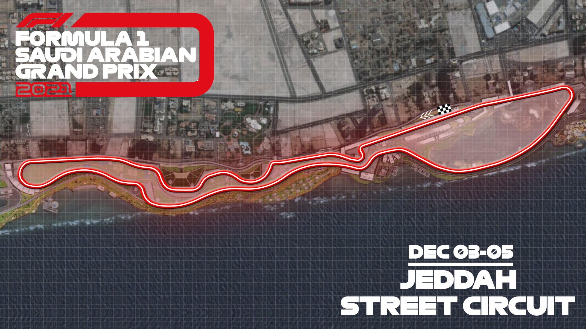
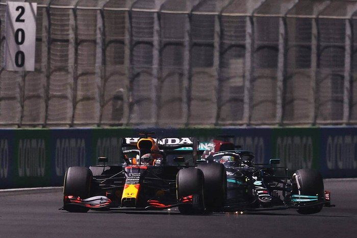

All New Circuit
The innagural Saudi Arabian Grand Prix took place at the newly built Jeddah Corniche Circuit in Jeddah, Saudi Arabia last Sunday (December 5th). The circuit, which was just completed and approved by the FIA, was built in just 8 months and becomes one of the most interesting tracks on the Formula 1 calendar. The track has 27 corners (most of any track in F1) and becomes the second fastest track overall, the fastest street race, and the second longest track currently in Formula 1. Race director and FIA Safety Delegate Michael Masi signed off on the track on December 2nd after careful inspection to make sure the tracl follows all regulation and safety precautions set forth by the FIA.
This season of Formula 1 has been relentless in delivering intense races and moments, and the first ever race at Jeddah did not dissapoint. During the race, there were two separate crashes, both of which caused a red flag (race stoppage). After a hard fought battle between the drivers during the race, the 7 time world champion Lewis Hamilton ended up winning the race. With his win, the drivers championship becomes tied between Max Verstappen and Lewis Hamilton going into the final race of the season. With both the driver's championship and the constructor's championships up for grabs, the season finale of the 2021 Formula 1 Season is sure to come to an epic conclusion.
Heated Rivalry
The 2021 Season of Formula 1 will go down as one of the most exciting and competitive seasons of all time. Given that F1 has a very historic and eventful history, just shows how special the 2021 season has been. At the end of the 2020 season Lewis Hamilton won his 7th World Championship, tying for the most of any driver, and Mercedes won their 8th World Championship in a row, the most consecutive wins of any team in F1 history. Many thought that this year would be no different. Lewis and Mercedes would go on to win another championship each, with relatively little competition. What has surprised everyone, is how fast of a car Red Bull was able to build, and how fas their drivers have performed this year, especially Verstappen. Verstappen has finished either 1st or 2nd in almost every race of the season, except for one of the most infamous races of this season. At the Italian Grand Prix, both Hamilton and Verstappen crashed into each other and were taken out of the race. This event intensified the already heated rivalry between the two drivers. Since that moment in the season, both drivers have continued to put on a show during every qualifying session and race. In the most recent race, in the last few laps after Verstappen was forced to let Lewis overtake him for first place (Max gained an advantage while outside track limits), the two drivers collided again, but managed to stay in the race this time and Lewis and Max going on to finish 1st and 2nd respectively. With the driver's championship up for grabs in the final race of the season, it's literally anyone's title for the taking. Be sure to tune into the Abu Dhabi Grand Prix on Sunday December, 12th at 9:00 AM EST.